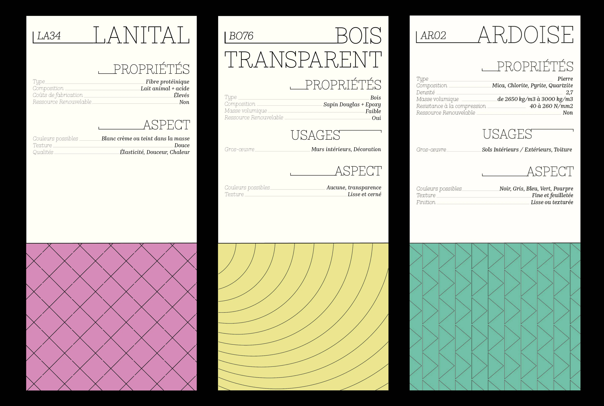

The Great Material Library of the Gobelins
→ Letters are considered like a modular structure encapsulating patrimonial treasures. My use of serifs, modernizes the project while paying tribute to the institution's heritage and was inspired by the History Typeface by Peter Bil’ak.
This project was conceived in collaboration with space design students.
This project was conceived in collaboration with space design students.
